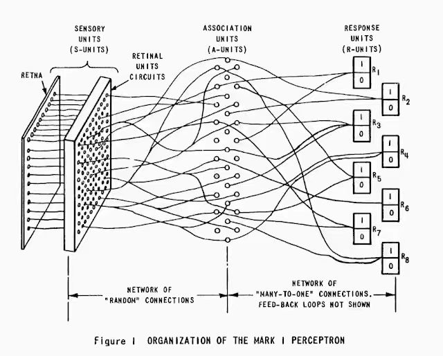

viewof learning_rate = Inputs.range([0.02, 1.1], {
value: 0.2,
step: 0.02,
label: "Step Size (α):"
})
viewof steps = Inputs.range([1, 15], {
value: 4,
step: 1,
label: "Steps Taken:"
})
d3 = require("d3@7")
loss_function = (x) => Math.pow(x, 2)
gradient = (x) => 2 * x
history = {
const x_history = [2.5];
const y_history = [loss_function(2.5)];
for (let i = 0; i < steps; i++) {
let current_x = x_history[x_history.length - 1];
let grad = gradient(current_x);
let next_x = current_x - learning_rate * grad;
x_history.push(next_x);
y_history.push(loss_function(next_x));
}
return x_history.map((x, idx) => ({ x: x, y: y_history[idx], index: idx }));
}
status_text = {
if (learning_rate >= 1.0) {
return "⚠️ Kairui screams: 'The step is TOO BIG! We are flying into the air! 💥'";
} else if (learning_rate < 0.05) {
return "🐢 Too conservative... When will we ever reach the valley?";
} else {
return "✅ Smooth sliding! Cauchy is smiling in the grand valley.";
}
}
title_color = learning_rate >= 1.0 ? "#ff8fab" : (learning_rate < 0.05 ? "#adb5bd" : "#7fbce6")
html`
<div style="color: ${title_color}; font-weight: bold; font-size: 14px; margin-bottom: 10px;">
Step Size (α) = ${learning_rate} | Steps = ${steps}<br>${status_text}
</div>
${Plot.plot({
grid: true,
width: 700,
height: 400,
x: { domain: [-3.5, 3.5], label: "Position in Parameter Space (x)" },
y: { domain: [-0.5, 9.5], label: "Altitude / Pain Index (Loss)" },
marks: [
Plot.areaY(d3.range(-3, 3.1, 0.02), {
x: d => d,
y: d => loss_function(d),
fill: "lightgray",
fillOpacity: 0.3
}),
Plot.line(d3.range(-3, 3.1, 0.02), {
x: d => d,
y: d => loss_function(d),
stroke: "black",
strokeOpacity: 0.7
}),
Plot.line(history, { x: "x", y: "y", stroke: "#7fbce6", strokeWidth: 2 }),
Plot.dot(history, { x: "x", y: "y", fill: "#7fbce6", r: 4 }),
Plot.dot([history[history.length - 1]], { x: "x", y: "y", fill: "#ff8fab", r: 7 })
]
})}
`Chasing a Valley That Barely Exists
How Calculus Taught Machines to Learn
NoteGroup Information
Group: Vitality
Authors: XU WEIJIE, WANG KAIRUI, JIANG KERAN
Prologue · The Era of Pen and Paper: Just Set the Derivative to Zero
Every college student has an ultimate dream before finals — the power to see the future. To find a good excuse to relax, we plan to use linear regression to build a small final grade prediction model.
Let’s assume that only two simple things decide your MAT103 grade: sleep time and practice amount. We can write the prediction equation like this:
\[ \hat{y}_i = w_1 (\text{sleep}_i) + w_2 (\text{practice}_i) + b \]
To make the predicted value \(\hat{y}_i\) as close to your real grade \(y_i\) as possible, we bring in the famous Mean Squared Error (MSE) loss function as our “pain index”:
\[ L(w_1, w_2, b) = \frac{1}{n}\sum_{i=1}^{n}(\hat{y}_i - y_i)^2 \]
One thing worth being precise about: sleep and practice are fixed data — they are not what we optimize. The knobs we turn, and the landscape we are about to descend, live in the space of the weights \((w_1, w_2, b)\).
Going back to the 1630s, mathematician Pierre de Fermat proposed the idea of Adequality: Want to find the extreme value of a function? Simple, just set the derivative to zero! That is:
\[ \nabla L = 0 \]
In this neat and clean convex bowl landscape, the goddess of mathematics is very generous. We don’t even need to sweat to directly find its closed-form solution using linear algebra:
\[ w = (X^\top X)^{-1}X^\top y \]
With this perfect mathematical formula, in the era of pen and paper, humans thought they ruled all the valleys and mountains.
However, every beautiful lie has cracks. What if this parameter space is not 3-dimensional, but billions of dimensions like today’s Large Language Models? What if the size of matrix \(X^\top X\) is so huge that the computer memory explodes instantly and we cannot calculate the inverse matrix at all? Or, what if \(\nabla L = 0\) becomes an extremely ugly transcendental equation that cannot be solved on paper?
Blind Descent: Cauchy Feels for the Slope (1847)
In 1847, the French mathematician Cauchy was driven crazy by the non-linear equations of planetary motion. The equations could not be solved, and direct calculation led to a dead end.
Cauchy slapped his thigh and thought: If I can’t solve for the exact destination, can’t I just try to move forward step by step?
Imagine this: in the middle of a dark night with thick fog and zero visibility, three students — Weijie, Kairui, and Keran — are unfortunately dropped into the wild mountains. They cannot see where the valley is, but their goal is clear — to go down the mountain as fast as possible.
- Keran fumbles around, trying to find the footsteps of previous people, but gets tripped by a tree branch.
- Kairui takes out a drone to scout the path, but finds out the drone has no battery left.
- Only Weijie calmly slaps the mud off their legs, smiles coldly, and says: “Why panic? We have the Directional Derivative.”
Since we can’t see, let’s feel with our feet instead — step in all 360 degrees around us and find out which direction drops away the steepest. We can pin that down with strict mathematical vector language:
NoteClick to expand: Strict Mathematical Proof of the “Steepest Descent Direction”
Assume we are at a certain point on the mountain slope, and the gradient at this point is \(\nabla f\). We choose a unit vector \(u\) as the direction of our step.
Then, the steepness of the slope in direction \(u\) (the directional derivative \(D_u f\)) can be written as the dot product of the gradient and that direction:
\[ D_u f = \nabla f \cdot u = \|\nabla f\| \|u\| \cos \theta = \|\nabla f\| \cos \theta \]
where \(\theta\) is the angle between the gradient vector \(\nabla f\) and our stepping direction \(u\).
If we want to move forward at the fastest speed down the mountain, it means we want this directional derivative to reach its minimum value (the sharpest drop).
Looking at the equation above, if and only if \(\cos \theta = -1\), which means \(\theta = \pi\), the directional derivative reaches its global minimum:
\[ \min (D_u f) = -\|\nabla f\| \]
What does \(\theta = \pi\) mean? It means the direction \(u\) you step in must be strictly opposite to the gradient vector \(\nabla f\)!
The conclusion shows: The opposite direction of the gradient is the steepest downhill direction (\(-\nabla f\))!
Time to meet the two giants of calculus behind this “blind man’s downhill” idea — one cautious, one radical:
Pierre de Fermat (1601–1665)
Augustin-Louis Cauchy (1789–1857)
Figure: Fermat (left) and Cauchy (right). In the 1630s, Fermat advocated for finding the solution “in one single step” by setting the derivative to zero; while in 1847, facing the dilemma where analytical solutions were impossible, Cauchy introduced the “take one step at a time” Gradient Descent rule.
In the end, relying on perfect calculus intuition, Weijie pulled Kairui and Keran along, sliding all the way down in the opposite direction of the gradient until they reached a small valley. Although they still couldn’t see the far distance, they re-calculated the opposite direction of the gradient with every single step. This blind man’s rule of “taking one step at a time” is the cornerstone of modern AI optimization — Gradient Descent.
However, going down a mountain is not as simple as running with your eyes closed. While sliding, Kairui suddenly let out a scream — he realized that everyone’s steps were way too big, and their bodies were flying into the air…
How Big a Step? Taylor’s Ghost and the Learning Rate
The journey down the mountain became much more practical when mathematicians began to ask a new question:
If we already know which direction leads downward, how large should each step be?
The answer eventually led to one of the most important ideas in modern optimization: Gradient Descent.
For a differentiable function \(f(w)\), the update rule is
\[ w_{k+1}=w_k-\alpha \nabla f(w_k), \]
where:
- \(w_k\) is the current position;
- \(\nabla f(w_k)\) is the gradient at that point;
- \(\alpha\) is called the learning rate.
The learning rate sets how aggressively we move toward the minimum. Too small, and progress crawls. Too large, and the steps start to oscillate — or blow up completely.
Why the learning rate matters
Here is Taylor’s ghost at work: near any critical point, Taylor’s theorem says a smooth function looks almost exactly like a quadratic — the linear term vanishes (that’s what makes it critical), and the quadratic term is whatever is left. So studying how gradient descent behaves on a plain quadratic isn’t a toy example; it’s a preview of how it behaves near any smooth minimum.
Consider the simple quadratic function
\[ f(w)=\frac12aw^2,\qquad a>0. \]
Its gradient is
\[ \nabla f(w)=aw. \]
Substituting this into the gradient descent formula gives
\[ w_{k+1}=w_k-\alpha aw_k. \]
Therefore,
\[ w_{k+1}=(1-\alpha a)w_k. \]
For the sequence to converge to the minimum, we must have
\[ |1-\alpha a|<1, \]
which leads to the condition
\[ 0<\alpha<\frac2a. \]
That’s the whole reason a learning rate is worth fussing over, in this toy problem and in a real training run alike: stay inside that window and you glide to the bottom; step outside it and the same update rule throws you further away with every iteration.
Try it yourself: push α until it breaks
Here it is, live, on \(f(w) = \frac12 w^2\) (so \(a = 1\), and the threshold above becomes \(0 < \alpha < 2\)).
Drag the slider to change \(\alpha\) and watch whether the sequence converges smoothly, oscillates its way to convergence, or blows up.
The Machine That Learned — and the Winter That Followed
So far this has all been abstract: a function, a slope, a step size. The first real test of that machinery didn’t come from physics or engineering — it came from a much stranger question: can a machine learn?
The perceptron boom (1958)
By the late 1950s, the question in the air had shifted from “how do we compute the answer” to something stranger: could a machine work out the answer on its own?
In 1958, the psychologist Frank Rosenblatt built a machine to try. He called it the Mark I Perceptron — one of the very first neural networks — and it drew enough attention that The New York Times covered it, floating the idea of machines that might one day think.
The hardware looked nothing like a modern computer. A 20-by-20 grid of photocells stood in for a retina, wired through a patch panel like an old telephone switchboard to a wall of motor-driven potentiometers — actual dials — that physically turned as the machine adjusted each connection’s weight. Learning, in 1958, was a room full of things spinning.
The design was borrowed loosely from how a neuron fires: take a set of inputs, multiply each by a weight, add them up, and use the result to make a decision.

Figure 3.1: The Organization of the Mark I Perceptron.
Crude as it looks now, the perceptron was the first serious attempt to let a machine learn from data instead of just following instructions someone typed in by hand.
The first AI winter: when XOR broke the perceptron (1969)
That excitement did not survive the decade.
In 1969, Marvin Minsky and Seymour Papert published a book, simply titled Perceptrons, that pointed out something the field had somehow overlooked: a single-layer perceptron cannot learn the XOR problem.
XOR just asks whether two inputs differ — output 1 if they do, 0 if they don’t. Plot the four possible inputs and color them by their correct answer, though, and the two colors interleave diagonally. There is no straight line anywhere on that plane that puts every point of one color on one side and every point of the other color on the other. A perceptron can only draw straight lines. It was never going to solve this.
A single result like that was enough to freeze the field. Funding dried up, enthusiasm evaporated, and the years that followed became known as the first AI Winter.
Buried in the same book, though, was an escape hatch. Minsky and Papert themselves pointed out that a network with a hidden layer — extra neurons stacked between input and output — could solve XOR in principle. Nobody knew how to train one. That gap had a name: the Credit Assignment Problem.
Who gets the blame? The credit assignment problem
Here is what that problem actually looks like. Say a multilayer network makes a wrong prediction. Every weight in every layer contributed to that mistake somehow — but not equally, and not in any way visible just by looking at the final output. Which of the thousands of internal knobs do you turn, and by how much?
For close to two decades, nobody had a good answer. It was understood, in principle, that a large enough multilayer network could represent almost anything, XOR included. What was missing was a way to actually train one. The tool that eventually cracked it wasn’t new machine-learning theory at all — it was calculus already familiar to any MAT103 student: the chain rule.
The chain rule, unleashed: the mathematics of backpropagation
The trick is to treat the whole network as one long chain of nested functions and apply the chain rule straight through it. If the loss \(L\) depends on a sequence of intermediate functions,
\[ L=f_n(f_{n-1}(\cdots f_1(w)\cdots)), \]
then the chain rule gives the derivative of the loss with respect to any weight \(w\) buried deep inside the chain:
\[ \frac{\partial L}{\partial w} = \frac{\partial L}{\partial f_n} \cdot \frac{\partial f_n}{\partial f_{n-1}} \cdot \cdots \cdot \frac{\partial f_1}{\partial w}. \]
That product of local derivatives, carried all the way back through the network, is backpropagation. Rather than solving for every parameter’s derivative from scratch, the network computes the error once at the output and passes it backward layer by layer, so each neuron picks up exactly its own share of the blame. What had been an intractable bookkeeping problem became something a computer could run in a single pass.
1986: neural networks come back from the dead
None of this was brand new mathematics — Seppo Linnainmaa had worked out the same idea in 1970, and Paul Werbos had applied it to neural networks in 1974 — but neither paper reached the people working on AI at the time. It took until 1986, when David Rumelhart, Geoffrey Hinton, and Ronald Williams published a paper connecting backpropagation directly to gradient descent and showing, convincingly, that multilayer networks really could be trained this way. That was enough to thaw the field. The AI Winter ended, and the groundwork for modern deep learning was in place.
Every major model built since — from the first networks that learned to read handwritten digits to the large language models running today — still leans on the same two ideas from this chapter: follow the gradient downhill, and use the chain rule to work out which way is down.
Rough Ground: Noise, Curvature, and the Gradient That Lies
By now our descent is in good shape. Chapter 2 gave us a step in the right direction and a safe learning rate; Chapter 3 gave us the chain rule, scaled up into backpropagation, so we can compute the gradient of even a deeply nested model. In principle, we are done: pick a direction, take a step, repeat.
In principle. Point this machinery at a real learning problem and two new troubles show up right away. The first is about the data: with millions or billions of examples, an honest gradient is too expensive to compute at every step, which is what pulls stochastic gradient descent — and its strange fondness for noise — into the story. The second is about the terrain: a single fixed step size turns out to be naive once the ground has real curvature, and worse, that same terrain can produce points where the gradient goes quiet without being anywhere near a minimum — chasing down what a silent gradient can be hiding is what carries this chapter straight into the Finale.
The data problem, or: learning by stumbling
A model does not learn from a single example; it learns from a dataset. Its loss is an average over \(n\) data points,
\[L(\mathbf{w}) = \frac{1}{n}\sum_{i=1}^{n} \ell_i(\mathbf{w}), \qquad \nabla L(\mathbf{w}) = \frac{1}{n}\sum_{i=1}^{n} \nabla \ell_i(\mathbf{w}).\]
Every honest step therefore requires touching all \(n\) examples. When \(n\) runs into the millions — or, for a modern language model, the billions — computing that full sum even once is punishingly expensive, and we need thousands of steps.
The fix is almost insultingly simple: don’t use all the data. At each step, draw a small random handful — a mini-batch \(B\) — and estimate the gradient from it,
\[\nabla L(\mathbf{w}) \;\approx\; \frac{1}{|B|}\sum_{i \in B} \nabla \ell_i(\mathbf{w}).\]
This is stochastic gradient descent (SGD), and its mathematical root reaches back to the stochastic-approximation scheme of Robbins and Monro (1951), long before anyone was training networks.
TipThe reversal: noise is not a bug
The mini-batch gradient is only an estimate of the true gradient — it is noisy, jittering around the real direction from one step to the next. We introduced that noise purely for speed, but it earns its keep twice over. First, writing \(g_B = \frac{1}{|B|}\sum_{i\in B}\nabla \ell_i(\mathbf{w})\) for the mini-batch gradient, the estimate is unbiased — \(\mathbb{E}[g_B] = \nabla L(\mathbf{w})\) — so on average we still head downhill. Second, the jitter around that average is exactly what rattles the descent out of shallow traps it would otherwise settle into. A shortcut we took to save computation turns out to also help the search.
The step that learns to tune itself
There is a second, quieter problem. The clean threshold \(0 < \alpha < 2/a\) from Chapter 2 — where \(a\) bounded the curvature of the loss — assumed a single, fixed learning rate for every parameter, and a single curvature to respect. Leave one dimension and that stops being enough: the loss can curve sharply in some directions and barely at all in others, and one \(\alpha\) can’t serve both. The mismatch is measured by the condition number \(\kappa = \lambda_{\max}/\lambda_{\min}\) — the ratio between the steepest and the flattest curvature, i.e. the largest and smallest eigenvalues of the Hessian (more on that shortly). A large \(\kappa\) forces a single \(\alpha\) to crawl in the flat directions while it zig-zags in the steep ones. And no one is going to hand-tune one \(\alpha\) for a billion parameters.
The remedy: stop using one fixed step for everything. A family of methods — momentum, then Adam (Kingma and Ba, 2014) — lets each parameter carry its own effective step size, adapted from the history of gradients it has personally seen: parameters with small, consistent gradients get a bigger effective step; parameters with large or erratic gradients get a smaller one. We will not parade the whole zoo of optimizers here; the point is only that the constant \(\alpha\) turned into a quantity the algorithm tunes for itself, coordinate by coordinate.
The real trap: when the gradient lies
Gradient descent stops when \(\nabla f = \mathbf{0}\). That is the whole stopping rule — but a vanishing gradient only tells us we have reached a critical point, and a critical point need not be the bottom of anything. It might be a peak. It might be something stranger.
First-order information cannot tell these apart; all of them have \(\nabla f = \mathbf{0}\). To see the difference we need curvature — the second derivatives, collected into the Hessian matrix. For a function of two variables it is the \(2\times2\) matrix
\[H = \begin{pmatrix} f_{xx} & f_{xy} \\ f_{yx} & f_{yy} \end{pmatrix},\]
and for a function of \(d\) variables the same idea just gets bigger: \(H\) becomes the \(d \times d\) matrix with entries \(H_{ij} = \partial^{2}f/\partial x_i \partial x_j\), and it has \(d\) eigenvalues instead of two. Everything below is easiest to see in two dimensions, but it is stated so it carries over unchanged when \(d\) is in the billions.
For a function of two variables, the classical second-derivative test reads the sign of the determinant \(D = \det H = f_{xx}f_{yy} - f_{xy}^{2}\) at a critical point:
\(f(x,y) = x^{2}+y^{2}\). Then \(H = \begin{pmatrix}2&0\\0&2\end{pmatrix}\), so \(D = 4 > 0\) and \(f_{xx} = 2 > 0\). The surface curves up in every direction — a genuine bottom. (Eigenvalues: \(2, 2\), both positive.)
\(f(x,y) = -x^{2}-y^{2}\). Then \(H = \begin{pmatrix}-2&0\\0&-2\end{pmatrix}\), so \(D = 4 > 0\) but \(f_{xx} = -2 < 0\). The surface curves down in every direction — a summit. (Eigenvalues: \(-2, -2\).)
\(f(x,y) = x^{2}-y^{2}\). Then \(H = \begin{pmatrix}2&0\\0&-2\end{pmatrix}\), so \(D = -4 < 0\). The surface curves up along \(x\) and down along \(y\) — the shape of a mountain pass, or a Pringle. Its gradient vanishes at the origin, yet it is neither a peak nor a valley. This is a saddle point. (Eigenvalues: \(2, -2\) — one of each sign.)
Numbers on a page only go so far. Here is that saddle, \(f(x,y) = x^2 - y^2\), as an actual surface — drag it around and watch the pass shape for yourself: a valley if you approach along one axis, a summit if you approach along the other.
Look at what actually decides the verdict in each case: the signs of the eigenvalues — all positive for a minimum, all negative for a maximum, mixed for a saddle. This is not a coincidence of two dimensions; it follows directly from the determinant test, since for a \(2\times2\) matrix the determinant is the product of the eigenvalues and the trace \(f_{xx}+f_{yy}\) is their sum. So \(D>0\) forces both eigenvalues to have the same sign, and \(f_{xx}\)’s sign tells you which one; \(D<0\) forces one positive and one negative. The same logic scales to any dimension: a critical point is a minimum if and only if every eigenvalue of the Hessian is positive — the condition that \(H\) is positive definite. This single fact is what the finale is built on.
Why not just use the Hessian directly? Newton’s method does exactly that, using \(H\) to leap toward the minimum, and it converges beautifully fast. But inverting a \(d \times d\) Hessian costs on the order of \(d^{3}\) operations per step. For \(d\) in the billions that is unthinkable, which is why deep learning lives almost entirely on first-order methods like SGD.
An honest note on saddles. Strictly speaking, plain gradient descent is unstable at a saddle: a random perturbation will eventually push it off (one more reason SGD’s noise is welcome). The true damage is subtler — the gradient is nearly zero for a large region around a saddle, so the descent doesn’t get trapped forever so much as crawl, agonizingly, across a vast flat plateau.
Finale · The Valley That Barely Exists
We ended the last chapter with a single sentence: a critical point is a minimum if and only if every eigenvalue of its Hessian is positive. In two dimensions that is a statement about two numbers, and it feels harmless. It stops feeling harmless once the numbers are counted in billions.
When two coins become a billion
Picture the sign of each eigenvalue as a coin flip — positive or negative, roughly even odds. For a two-dimensional problem, landing on a minimum means flipping two heads: not rare at all. But a modern network has a Hessian with \(d\) eigenvalues, where \(d\) can be \(10^{10}\) or more. For every one of them to come up positive, all at once, the probability is about
\[P(\text{minimum}) \approx \left(\tfrac{1}{2}\right)^{d}.\]
At \(d = 10\) that is already under one in a thousand. At \(d = 50\), \(2^{-50}\) is about as likely as picking one specific second out of the last 35 million years. As \(d\) grows, the category “minimum” doesn’t just get rarer — past a few dozen dimensions it is, for all practical purposes, empty. Nearly every critical point that a high-dimensional optimizer meets is a saddle.
Rather than take that on faith, flip the coins yourself. Drag the slider to raise the dimension \(d\), and use the button to keep resampling fresh critical points. At \(d = 2\) or \(3\) you will land on an all-positive point — a true minimum — fairly often. Push \(d\) toward \(30\) and try to find one. You will watch the “Minima” counter fall to zero and stay there.
TipTry this
- Set \(d = 2\). Click Resample ten times. How often do you land on a minimum? (Expect roughly 1 in 4.)
- Slide \(d\) to 30. Click Resample as many times as you like — can you find even one?
- At \(d = 100\) the counter reads 0 out of 10,000. Is the probability actually zero? (Hint: look at the theoretical rate. What sample size would you need?)
An honest footnote. The demo treats each eigenvalue’s sign as an independent coin flip. Real Hessian eigenvalues are not independent — they follow random-matrix theory (the semicircle law), and the connection to the statistical physics of Gaussian random fields makes the true fraction of minima even more extreme than \((1/2)^d\). We keep the coin-flip picture for intuition and use this note to tell the precise truth. The rigorous statement is due to Dauphin et al. (2014).
This changes what we should actually be afraid of. For decades the textbook nightmare was the bad local minimum — a shallow valley the model would fall into and never leave. In a billion dimensions that nightmare barely applies, because almost nothing is a minimum at all. The real adversary is the saddle. It doesn’t trap the descent the way a pit would; instead the gradient dwindles to almost nothing across a vast, nearly flat plateau, and progress slows to a crawl.
The benevolent lie
Cast your mind back to the prologue, to that first tidy model of exam scores. Its loss was a smooth convex bowl with exactly one critical point — a single global minimum, and not a saddle in sight. We could even solve \(\nabla L = \mathbf{0}\) in closed form.
That bowl was a benevolent lie, the kind you tell a beginner. Here’s the math behind it: for the MSE loss of a linear model, the Hessian is \(H = \frac{2}{n}X^{\top}X\), a constant matrix that does not depend on \(\mathbf{w}\) at all, and it is positive semidefinite everywhere. The surface curves upward — or at worst stays flat — in every direction, at every point, with no exceptions, so there is no room for a saddle to hide anywhere in it. It is the landscape of a simple, linear model, and it is nothing like the terrain a deep network actually descends. The honest picture is the one you just dragged into existence: a wild, high-dimensional country where minima are astronomically rare and saddles stretch to every horizon.
Chasing a valley that barely exists
And yet the machines learn anyway. The idea Cauchy sketched in 1847 to tame a system of equations too large to solve — take the steepest step downhill, and repeat — is, at bottom, what a language model does today, in billions of dimensions, at a cost measured in millions of dollars of electricity. The chain rule, which the funding freeze after Minsky and Papert’s critique had pushed to the margins of the field, is what Geoffrey Hinton and his collaborators carried through to a working algorithm in 1986, and it is still the engine underneath every step described in this chapter. Hinton would go on to share the 2018 Turing Award and, in 2024, the Nobel Prize in Physics — a long way from a room full of Rosenblatt’s dials.
Fermat set a derivative to zero. Cauchy felt his way down a slope with no map. A modern optimizer stumbles, deliberately and noisily, across a plateau of saddles it cannot see the edge of. Different centuries, the same question: how do you find the lowest point when you cannot see the whole landscape?
We’ve answered enough of it to build the models running today — but not all of it. The rest is an open problem, and it’s one this course has only handed you the vocabulary to start asking about.
Sources & Further Reading
- Rosenblatt, F. (1958). The perceptron: A probabilistic model for information storage and organization in the brain. Psychological Review, 65(6), 386–408.
- Minsky, M., & Papert, S. (1969). Perceptrons: An Introduction to Computational Geometry. MIT Press.
- Linnainmaa, S. (1970). The representation of the cumulative rounding error of an algorithm as a Taylor expansion of the local rounding errors. Master’s thesis, University of Helsinki.
- Werbos, P. J. (1974). Beyond Regression: New Tools for Prediction and Analysis in the Behavioral Sciences. PhD thesis, Harvard University.
- Rumelhart, D. E., Hinton, G. E., & Williams, R. J. (1986). Learning representations by back-propagating errors. Nature, 323(6088), 533–536.
- Robbins, H., & Monro, S. (1951). A stochastic approximation method. The Annals of Mathematical Statistics, 22(3), 400–407.
- Kingma, D. P., & Ba, J. (2014). Adam: A method for stochastic optimization. arXiv:1412.6980.
- Dauphin, Y. N., Pascanu, R., Gulcehre, C., Cho, K., Ganguli, S., & Bengio, Y. (2014). Identifying and attacking the saddle point problem in high-dimensional non-convex optimization. Advances in Neural Information Processing Systems (NeurIPS).